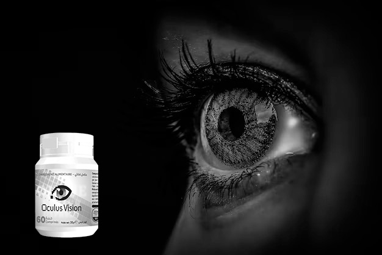
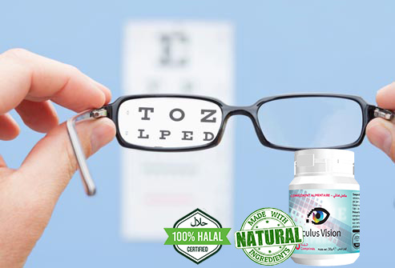
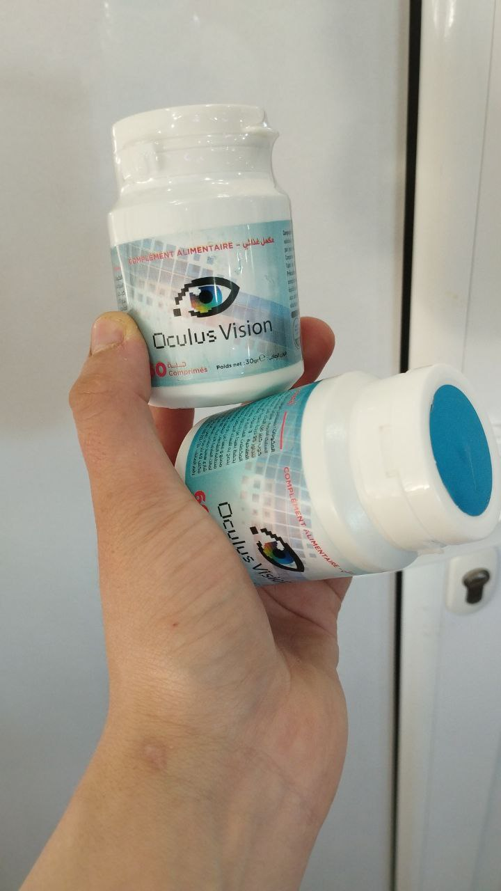

أفضل منتج للتخلص من مشاكل العيون بدون معاناة او تعب
 ما هو هذا المنتج و كيف نحصل عليه ؟
ما هو هذا المنتج و كيف نحصل عليه ؟
اليوم سوف يكون هذا المقال وافياً عن منتج رائع للتخلث من مشاكل العيون و إرهاق العيون و هو Oculus Vision
عندما تتدهور الرؤية تدريجيًا ، قد يكون من الصعب ملاحظة ذلك. يمتلك دماغنا الماكرة الوقت للتكيف مع التغييرات ، ولا يعاني الشخص من أي إزعاج معين ، وبالتالي لا يقلق. ومع ذلك ، هناك عدد من الأعراض التي يجب الانتباه إليها.
أعراض مشاكل العيون :

- ازدواج الرؤية وخاصة في المساء
- ظهور "الذباب" ، دوائر قزحية اللون في العيون.
- إحساس "برمل" في العينين ، وعدم ارتياح
- التهاب العين أو الشعور بألم أو حُرقة أو حكة بها
- العين الدامعة أو الجافة
- ضبابية الرؤية أو ازدواجها
- الصداع
- زيادة الحساسية للضوء، التي تُسمى رهاب الضوء
- صعوبة التركيز
- الشعور بعدم القدرة على إبقاء العينين مفتوحتين
ما هي أسباب الأسباب الشائعة التي تؤدي إلى إجهاد العين؟
- النظر إلى شاشات الأجهزة الرقمية
- القراءة بلا توقّف مؤقت لإراحة العين
- القيادة لمسافاتٍ طويلة أو مُمارسة الأنشِطة الأخرى التي تتطلب التركيز لوقت طويل
- التعرُّض للضوء الساطع أو التوهُّج
- إجهاد العين عند محاولة الرؤية في الإضاءة الخافِتة للغاية
- وجود مشكلة أساسية بالعين، مثل جفاف العين أو إبصار لم يُصحَّح، ويُعرف باسم الخطأ الانكِساري
- التعرض للضغط أو الإرهاق
- التعرُّض للهواء الجافِّ المتحرك من مروحة أو نظام تدفئة أو جهاز تكييف

ما هو OculusVision ؟
OculusVision هو مكمل غذائي في شكل حبوب . و تم صنعه للمساعدة في مكافحة إجهاد العين والحفاظ على الرؤية الطبيعية من خلال عمل اللوتين والمكونات الأخرى ودعم صحة العين وتحسين حدة البصر بمضادات الأكسدة والمغذيات الوقائية مثل اللوتين.بالإضافة إلى ذلك ، يساعد OculusVision في مكافحة إجهاد العين وإبطاء تطور التنكس البقعي المرتبط بالعمر.
ما هي مكونات OculusVision ؟
من مميزات هذا المنتج الأساسية انه منتج طبيعية 100% و لذلك هو ليس له أعراض جانبية .و سوف نقول لكم بعض من مكوناته :
- مستخلص اللوتين
- السيليكا الغروية
- ستيرات المغنيسيوم
مستخلص اللوتين يمكن أن يساعد في تحسين صحة العين، حيث يقوم بحماية العين من الأضرار التي يمكن أن تسببها الأشعة فوق البنفسجية والتي يمكن أن تؤدي إلى مشاكل مثل المياه البيضاء والماكولار ديجنيريشن.
السيليكا الغروية هي عنصر معدني مهم لصحة الجسم، حيث تشكل جزءًا من العديد من الأنسجة في الجسم مثل العظام والأنسجة الضامة والغضاريف. كما أنها تعتبر مضاداً للأكسدة الطبيعي وتساعد في تقوية الجهاز المناعي والحفاظ على صحة الجلد والشعر والأظافر.
أن استهلاك الأطعمة الغنية بالمغنيسيوم يمكن أن يساعد في تحسين صحة العين، حيث يمكن الحصول على المغنيسيوم من الخضروات الورقية الخضراء والمكسرات والحبوب والبقوليات والأسماك واللحوم او عن طريق تناوله في شكل مكمل غذائي كما هو الحال في OculusVision.
ما هي مميزات OculusVision ؟
- تخفيف العيون المتعبة والجافة .
- يخفف من الوخز واحمرار العين والالتهابات.
- المساعدة على الرؤية الباهتة.
- المساعدة على حدة العين.
- يساعد في مكافحة إجهاد العين.
- الحفاظ على الرؤية الطبيعية من خلال عمل اللوتين والمكونات الأخرى.
- دعم صحة العين.
- بالإضافة إلى ذلك ، يساعد OculusVision في مكافحة إجهاد العين وإبطاء تطور التنكس البقعي المرتبط بالعمر.
أراء الخبراء
الطبيب دينيس بوتوف : ترجع الفعالية التي لا مثيل لها للمكمل الغذائي Oculus vision إلى التركيبة التي تحتوي على مكونات طبيعية 100% والتي تشمل مستخلص اللوتين, مونوهيدرات اللاكتوز, السيليكا الغروية, ستيرات المغنيسيوم. .
و أفضل شيء انه منتج ليس سعره مبالغ فيه مقارنةً بمفعوله الرهيب و المذهل لكل من إستخدمه خصوصاً انني أنصح به جميع مرضاي دائماً و أصدقائي أيضاً .
يمكن للمكونات النشطة للمنتج رفع مستوى الفيتامينات اللازمة للتخلص من مشاكل النظر خلال فترى قصيرة . وخلال هذا الوقت ، يتم تطبيع توازن العناصر الدقيقة المسؤولة عن حدة البصر.
يؤدي هذا المكمل الغذائي إلى استقرار طبيعي لضغط العين ، وكذلك يقوي عضلات العين ويقوي الشبكية يساعد في التخلص من إجهاد العيون و الصداع الناتج عنها .
كيف يمكنكم شراء Oculus vision ؟
يمكنكم شراء Oculus vision عن طريق ملئ النموذج الرسمي للطلب بالأسفل بكتابة الإسم و رقم الهاتف بعد ذلك سوف يتواصل معكم مختص من الشركة الموزعة و سوف يجاوب على جميع أسئلتكم و يقوم معكم بتأكيد عنوان التوصيل داخل الجزائر .
نموذج الطلب الرسمي

أراء بعض المستخدمين ل OculusVision
سلمى , الجزائر
دائما نخدم بتلفون و عيني تعيا بزاااف و راسي .ملي بديت نشرب هذا مكمل لا اشعر باي الم بفضل هذا المنتج هايل فوور !لازم جربوه!

محمد , الجزائر
صح لقيت هذا منتج دايرين تخفيض 50%,راني نستعمل فيه معنديش بزاف و لقيت نتيجة في فترة ڨصيرة،عجبني بزاف هذا

سناء ,الجزائر
ورتهولي هذا منتج سحبتي و طلبت منذ ايام ،جبوهولي في 24ساعة وراني بفضل التخفيص حصلت على دورتين و هذه فوطو ديالهم👍

دليلة , الجزائر
انا كومونديتو مع تخفيض !قالولي غدوا اجيبهولي حتى لدار!